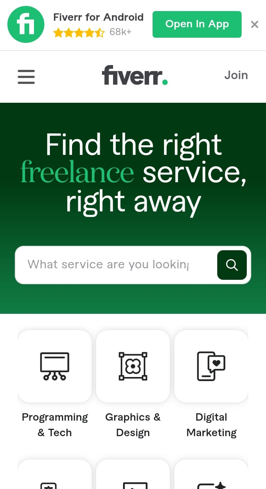

FIVERR
Fiverr is a freelance platform which is a great facility for freelancers where they can upload their gigs and attract a large amount of users. The biggest among them is the security of their payment.On fiver they can attract more customers in such a way that the banner of their gig should be very attractive, first of all they have to work hard on the banner around their gig and also some of their The more hashtags are used, the higher their ranking.After talking to their client, they will prepare their item according to their specified methods and deliver it to them according to the specified time. If the thing is suitable, then he will make the payment from him, otherwise he will tell him what kind of thing he wants, then he will make it and after that he will make the payment. Then the client will give it a rating and as soon as they get a rating, they will get their profile and their ranking, and as much as they have left, they will get customers.

How to get more clients
One of the ways to get the most clients on fiber is that first of all, your gig should be very attractive. If they see the banners, they will come to your site and your title should be something that the client likes more.
How to start freelancing
- Have a google account
- Create fiverr account.
- Make your profile more attractive.
- Start uploading gigs
- Make your gig more attractive by using best banners.
- Use trending hashtags.
- Talk to clients more friendly.
- Deliver service on time.
Fiverr joining link
Click here to join
When was it founded
May, 2010 by Micha Kaufman.
Fiverr is one of the most popular platforms for freelancers looking to offer their skills and connect with clients around the world and show his skill. While signing up is easyway, standing out and building a successful freelance career on Fiverr requires strategy and effort for any person. In this guide, we’ll break down everything you need to know to set up your profile for people, attract clients, and rank your gigs higher to boost visibility and sales per day.
How to Set Up Your Fiverr Profile in front of people
Your Fiverr profile is your storefront—it’s what potential clients see first you and what sets the tone for their decision to hire you in job. Setting it up right is essential for person.
- Choose a Friendly, Professional Profile Picture
Your photo should be clear and professional but also approachable. A smiling picture helps build trust, as clients like to see the person they’re working with. Avoid using logos or unrelated images.
- Write a Strong Bio
Your bio is where you tell clients in whic who you are and what you can do for them his client. Be concise but clear of it, and focus on the value you bring what you want. For example:
> "Hi! I’m a digital marketer with 5+ years doing this job of experience helping businesses grow through tailored social media and different strategies and engaging ad campaigns my work."
- Highlight Your Skills
Use the “Skills” section to list your core competencies for others. Choose relevant skills that align with the services you’re offering for others, such as “Graphic Design,” “SEO Writing,” or “WordPress Development.”are you gave to people
- Show Off Your Work
Add samples to your portfolio to give you clients a visual representation of your skills in your job. Whether it’s graphic design, writing, or voiceover work, can do you let your previous projects speak for themselves what work are give you others.
- Add Certifications (If You Have Them)
Fiverr allows you to showcase certifications and courses you’ve completed. These add credibility and help you stand out, especially in competitive niches.
- Set Your Prices Strategically
When you’re starting job, offer competitive pricing to attract clients and build your reputation in front of her. As you gain reviews and experience show, you can gradually increase your rates in front app and give good reviews.
Your Fiverr profile is your chance to make a great first impression in front of others clients. Take your time to create a profile best that’s professional look, engaging people, and showcases the best of what you have to offer to others.
How to Attract More Clients on Fiverr during job
Once your profile is ready to work, the next step is getting clients to notice and hire you are better for others. Standing out in a sea of freelancers can be tough for client, but with the right approach, it’s definitely achievable to you.
- Write Eye-Catching Gig Titles
Your gig title is often the first thing potential clients see and complete his work for better. Keep it simple and easy, clear, and focused on what you’re offering to clients. For example, instead of “Writing Services,” try “I Will Write SEO-Optimized Blog Posts to others Boost Your Website Traffic.”and low rate then people attract.
- Be Clear in Your Gig Description
In your description, you always explain what you offer to clients, how it benefits the clients, and why they should choose you in whole people. Use bullet points to make it easy to read and highlight unique aspects of your service for others understand easyily.
- Offer Multiple Packages
Fiverr lets you create three different packages for her clients: Basic, Standard for people, and Premium work. This is a great way to appeal to the clients with varying budgets and needs his thing whzat he want. For example:
- Basic: A short blog post (500 words).
- Standard: A more detailed blog post (1,000 words).
- Premium: A fully researched article with SEO optimization.
- Use Professional Images and Videos
High-quality visuals make your gigs more appealing. If possible, create a short video introducing yourself and explaining your services—it’s proven to boost client trust and engagement.
- Promote Your Services Beyond Fiverr
Share your gig links on social media, LinkedIn, or even within your personal network. Direct traffic to your Fiverr page to get more views and inquiries.
- Respond Promptly
Clients value quick responses, and Fiverr tracks your responsiveness. Aim to reply to messages as soon aspossible to improve your response rate and attract more clients.
- Overdeliver to Win Reviews
Go the extra mile to delight your clients easy way. A glowing 5-star review is worth the effort are show, as it boosts your credibility for others and helps future clients feel confident about hiring you first.
- Follow Up with Existing Clients
After completing an order, follow up with clients to see if they need additional services. Building relationships with repeat clients can significantly boost your income.
How to Rank Your Gigs Higher on Fiverr
Ranking higher on Fiverr means more visibility, which leads to more orders. Fiverr’s search system uses several factors to determine gig rankings, and here’s how you can make the algorithm work in your favor:
- Use Keywords Wisely
Think about what clients are searching for and include those keywords in your gig title your account, tags, and description on her. For example, if you’re offering logo design any social app, use terms like “Custom Logo Design” they are made or “Professional Logo Creation.” for client.
- Write Detailed Descriptions
A well-written gig description that naturally incorporates keywords not only appeals to clients but also helps Fiverr understand what your gig is about. Avoid overloading it with keywords—focus on clarity and relevance.
- Keep Your Profile and Gigs Active
Regularly updating your gigs, such as tweaking descriptions or adding new images, shows Fiverr that you’re an active seller. This helps improve your rankings.
- Deliver on Time
Meeting deadlines is critical. Late deliveries can negatively affect your gig’s position, so always deliver work within the timeframe promised.
- Get Positive Reviews
Reviews play a huge role in rankings. Satisfied clients are more likely to leave great reviews if you provide excellent work and service.
- Engage with Your Clients Quickly
Fiverr rewards sellers with high response rates. The faster you reply to messages, the better your chances of ranking higher.
- Minimize Cancellations
Avoid canceling orders unless absolutely necessary. A high cancellation rate can hurt your gig’s ranking, so only accept orders you’re confident about completing.
- Promote Your Gigs Offsite
Bringing in traffic from external sources you can helpfull for reaching, such as social media or personal websites are make, can boost your gig’s visibility on Fiverr client are atrative.
Ranking isn’t just about luck—it’s about consistent effort and smart optimization on his account. Follow these steps, and your gigs will gain more traction over time.